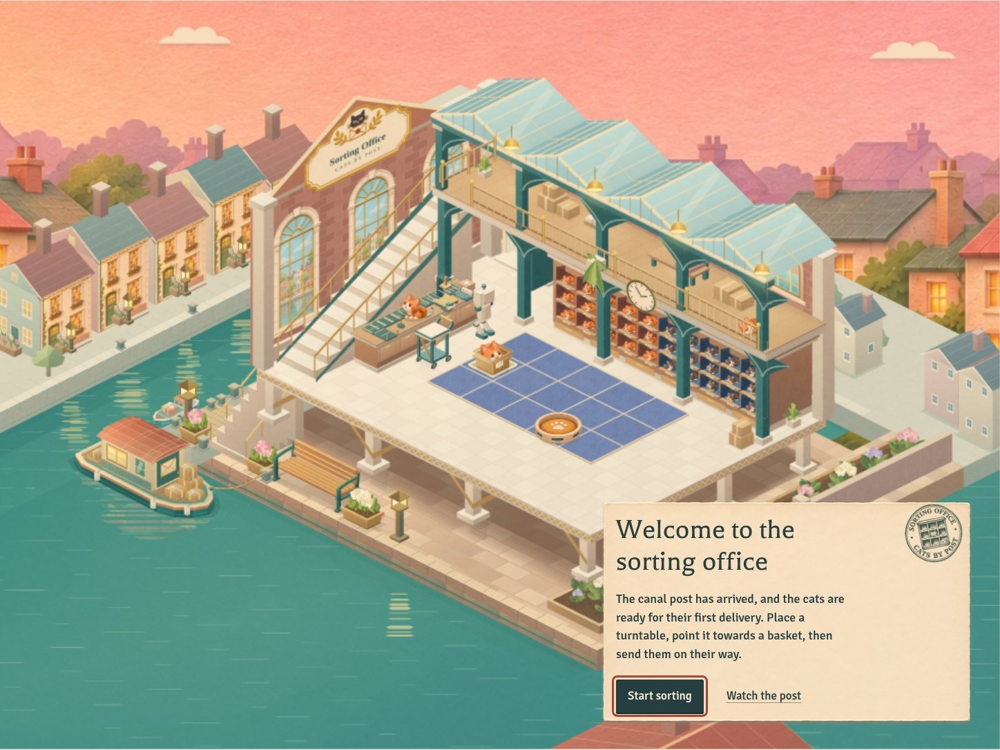
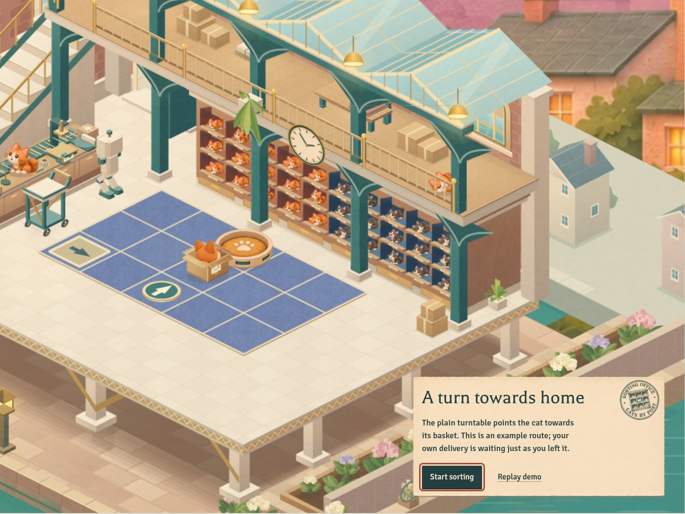
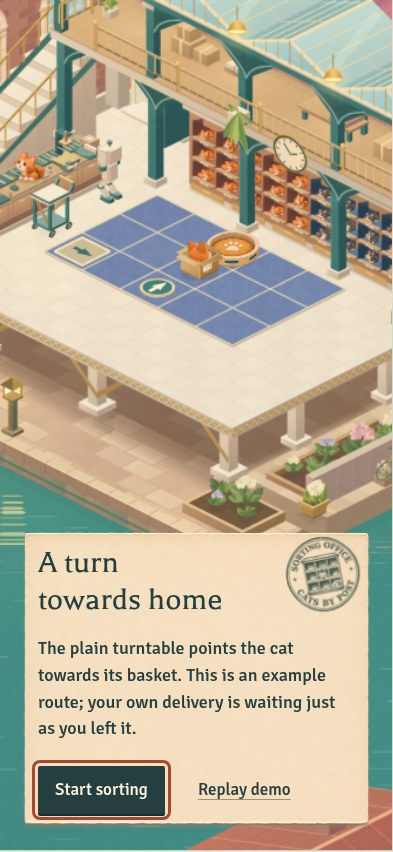
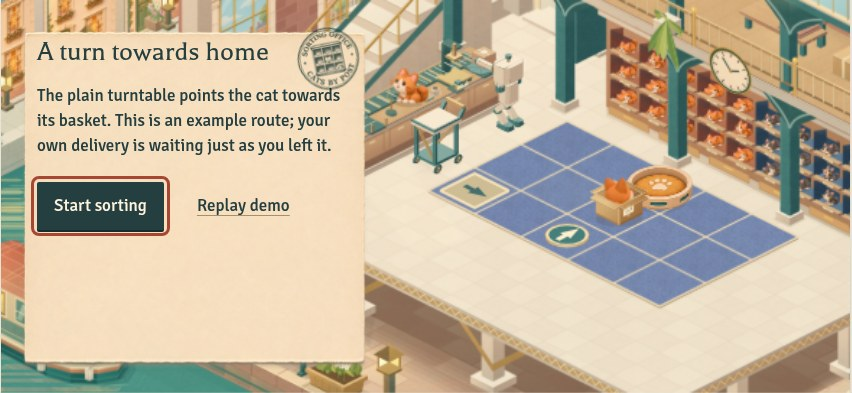

CATS BY POST · SORTING OFFICE
A welcome, a little more room, and the next post
The approved Office now stays with you through its chapter correspondence and independent demonstrations. Your arrangements stay as you left them.
Open the playable review →
If you have already played the first delivery, open the sorting menu and choose Chapter story.

The first arrival keeps the canal, front quay and working room in view.
Optional demonstrations use separate example routes and the same delivery rules.
Portrait phone
Landscape phoneParallel-room handoff guide
Web review checkpoint. The standalone study and native app remain unchanged.